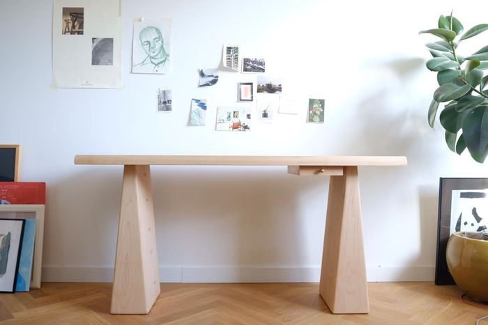
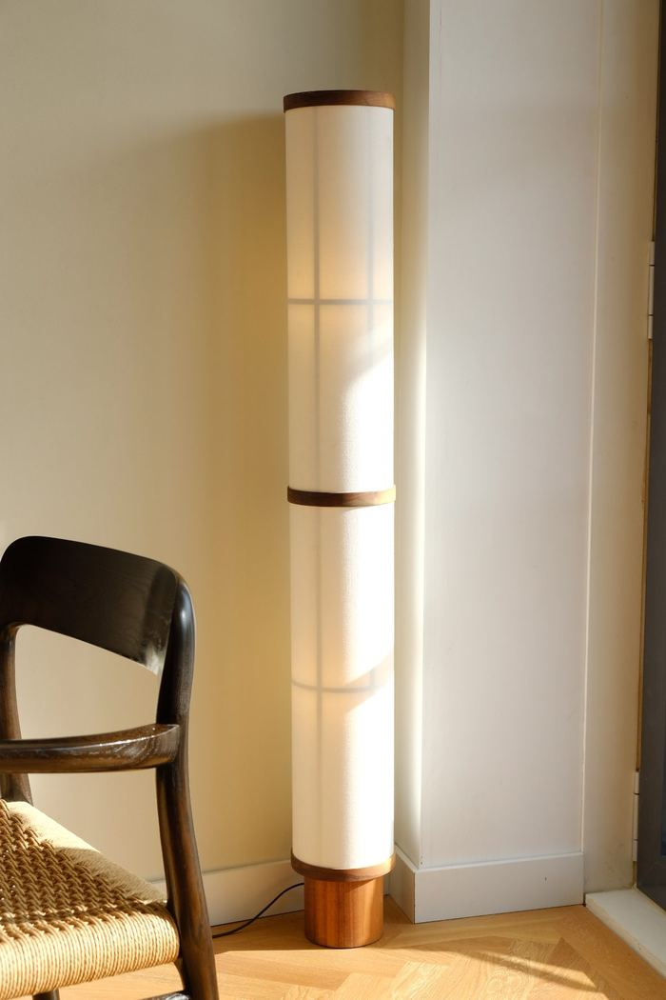
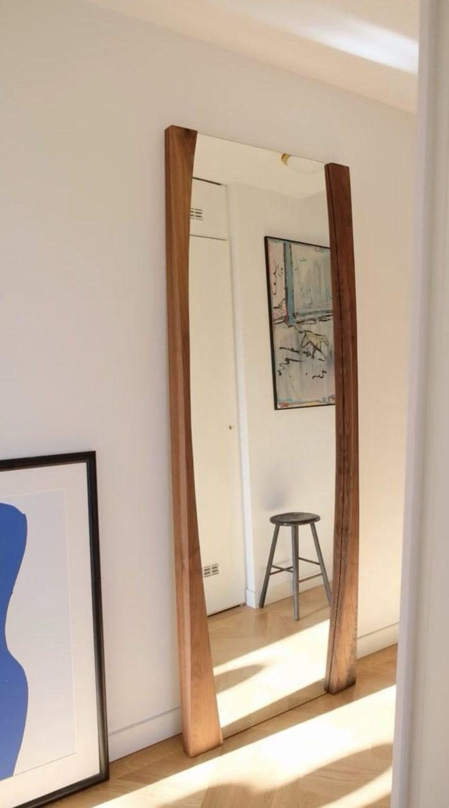

Maison d'Artiste — GLUEThe Drawing Room / Dining Room / ParlourAll makers →
Maurice Albert Jan
Maurice Albert Jan (1988) is a self-taught artist based at the Plantage Doklaan in Amsterdam. He creates sculptural furniture and objects that balance solidity with refinement.
Instagram · Message Maurice directly
100% of the sale proceeds go to the maker. Maurice Albert Jan works independently, without gallery representation.
—Works4 recorded

300+ year old American pine, nails, oil · 134 × 27 × 40 cm · 2025
€ 3.650,– available

Maple, walnut, bronze · 150 × 50 × 76 cm · 2025
€ 4.850,– available

Walnut, oak, cotton linen · 136 × 17,5 cm · 2024
€ 1.250,– available

Walnut, oil · 210 × 81,5 cm · 2025
€ 2.850,– available